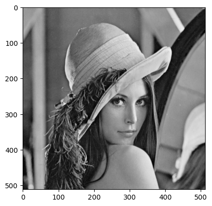

Feature description#
# Imports
import cv2
import numpy as np
import matplotlib.pyplot as plt
# Load image
image = cv2.imread('../../data/lenna_test_image.png')
# To grayscale
gray = cv2.cvtColor(image, cv2.COLOR_BGR2GRAY)
# Show image
plt.imshow(gray, cmap='gray')
plt.show()

HOG feature descriptors#
The resulting HOG Descriptor (feature vector), contains the normalized histograms from all cells from all blocks in the detection window concatenated in one long vector. Therefore, the size of the HOG feature vector will be given by the total number of blocks in the detection window, multiplied by the number of cells per block, times the number of orientation bins.
# Create HOG feature descriptor
hog = cv2.HOGDescriptor(_winSize=(64, 128),
_blockSize=(16, 16),
_blockStride=(8, 8),
_cellSize=(8, 8),
_nbins=9)
# Compute HOG features
h = hog.compute(image)
# Print result
print ('HOG Descriptor:', h)
print ('HOG Descriptor has shape:', h.shape)
HOG Descriptor: [0.16834342 0.15798853 0.21685353 ... 0.00838798 0.03580478 0.10791165]
HOG Descriptor has shape: (10557540,)
SIFT feature descriptors#
# Create SIFT feature descriptor
sift = cv2.SIFT_create()
# Detect keypoints
kp = sift.detect(gray, None)
# Compute descriptors
des = sift.compute(gray, kp)
# Print result
print("The feature detector returns a list of keypoints: " + str(kp[0:3]))
print("The feature descriptor returns a list of feature descriptors for each keypoint: " + str(des[1][0]))
print("Each SIFT descriptor is a vector of length: " + str(len(des[1][0])))
# Draw keypoints
cv2.drawKeypoints(gray, kp, image)
# Show result
plt.imshow(image)
plt.show()
The feature detector returns a list of keypoints: (< cv2.KeyPoint 000001342914A790>, < cv2.KeyPoint 000001345195B030>, < cv2.KeyPoint 000001345195ABB0>)
The feature descriptor returns a list of feature descriptors for each keypoint: [ 0. 1. 0. 1. 58. 153. 0. 0. 29. 0. 0. 1. 15. 69.
2. 24. 42. 0. 0. 0. 0. 0. 0. 36. 0. 0. 0. 0.
0. 0. 0. 0. 10. 34. 0. 0. 42. 153. 0. 0. 90. 2.
0. 0. 54. 153. 9. 19. 153. 17. 0. 0. 1. 13. 5. 47.
16. 3. 0. 0. 0. 0. 0. 2. 53. 153. 0. 0. 9. 48.
0. 0. 24. 16. 0. 0. 44. 153. 27. 16. 153. 13. 0. 0.
3. 54. 34. 68. 31. 5. 1. 4. 4. 0. 0. 3. 74. 153.
0. 0. 1. 3. 1. 0. 24. 114. 2. 0. 9. 47. 11. 3.
23. 3. 0. 1. 4. 23. 26. 49. 6. 0. 0. 10. 14. 0.
0. 6.]
Each SIFT descriptor is a vector of length: 128